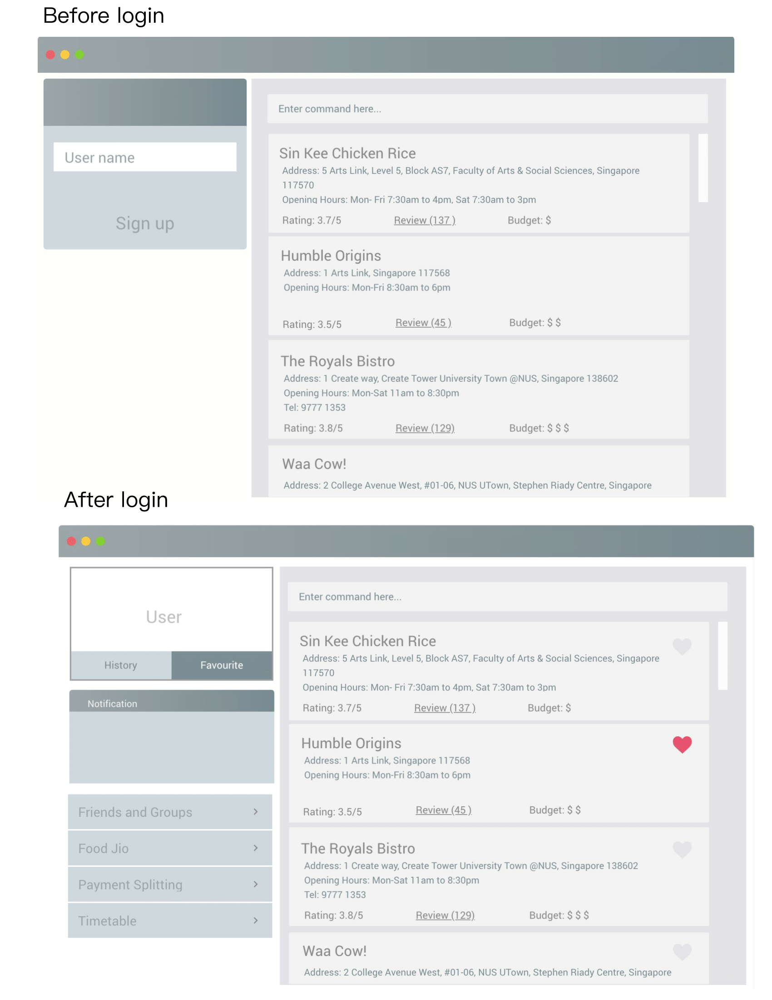

By: Team W10-2 Since: Aug 2018 Licence: MIT
- 1. Introduction
- 2. Features (Does Not Require Login)
- 3. Features (Requires Login)
- 3.1. Log In into an existing Makan Book Account:
login - 3.2. Log Out of an existing Session:
logout - 3.3. Write Review For Restaurant:
writeReview - 3.4. Display User Profile:
displayProfile - 3.5. Adding friends:
addFriend - 3.6. Accept friend request:
acceptFriend - 3.7. Delete friend request:
deleteFriendRequest - 3.8. Delete friend:
deleteFriend - 3.9. List friend requests:
listFriendRequests - 3.10. List friends:
listFriends - 3.11. Adding groups:
addGroup - 3.12. Adding members:
addMembers - 3.13. Accepting group requests:
acceptGroup - 3.14. Deleting group requests:
deleteGroupRequest - 3.15. Deleting groups:
deleteGroup - 3.16. List group requests:
listGroupRequests - 3.17. List groups:
listGroups - 3.18. Finding people to eat with:
createJio - 3.19. Deleting old jios:
deleteJio - 3.20. Sent add debt request:
addDebt - 3.21. Sent add debt request to a group
addGroupDebt - 3.22. Sent clear debt request:
clearDebt - 3.23. Accept debt request:
acceptDebtRequest - 3.24. Delete debt request:
deleteDebtRequest - 3.25. List all login user’s creditor
- 3.26. List all login user’s debtor
- 3.27. List all login user’s debt request received
- 3.28. List all login user’s debt request sent
- 3.29. List all login user’s debt history
- 3.30. Block unavailable timeslot manually:
blockDate - 3.31. Free timeslot manually:
freeDate - 3.32. See free Time:
listScheduleForWeek - 3.33. Find common group meeting times:
findDates
- 3.1. Log In into an existing Makan Book Account:
- 4. Administrator Level Features
- 4.1. Adding a restaurant:
add[DEPRECIATED, DO NOT USE, ONLY FOR ADMINISTRATORS] - 4.2. Deleting a restaurant :
delete[DEPRECIATED, DO NOT USE, ONLY FOR ADMINISTRATORS] - 4.3. Editing a restaurant :
edit[DEPRECIATED, DO NOT USE, ONLY FOR ADMINISTRATORS] - 4.4. Clearing all entries :
clear[DEPRECIATED, DO NOT USE, ONLY FOR ADMINISTRATORS] - 4.5. Undoing previous command :
undo[DEPRECIATED, DO NOT USE, ONLY FOR ADMINISTRATORS] - 4.6. Redoing the previously undone command :
redo[DEPRECIATED, DO NOT USE, ONLY FOR ADMINISTRATORS]
- 4.1. Adding a restaurant:
- 5. Changes coming in v2.0
- 6. FAQ
- 7. Command Summary
1. Introduction
Makan Book is for those who prefer to use a desktop app to search for restaurants within NUS to eat at alone or with friends. More importantly, MakanBook is optimized for those who prefer to work with a Command Line Interface (CLI) while still having the benefits of a Graphical User Interface (GUI). MakanBook also allows users to add and manage friends and groups, start private and public jios and so much more! Interested? Jump to the [Quick Start] to get started. Enjoy! == Quick Start
-
Ensure you have Java version
9or later installed in your Computer. -
Download the latest
makanbook.jarhere. -
Copy the file to the folder you want to use as the home folder for your Makan Book.
-
Double-click the file to start the app. The GUI should appear in a few seconds.
 -
Type the command in the command box and press Enter to execute it.
e.g. typinghelpand pressing Enter will open the help window. -
Some example commands you can try:
-
list: lists all restaurants -
signupu/johnnydoe pwd/pAssw0rd n/John Doe p/98765432 e/johnd@example.com: Sign Up for an account in the Makan Book. Allows you to use Makan Book’s many features -
exit: exits the app
-
-
Refer to Section 2, “Features (Does Not Require Login)” for details of each command.
2. Features (Does Not Require Login)
Command Format
-
Words in
UPPER_CASEare the parameters to be supplied by the user e.g. inadd n/NAME,NAMEis a parameter which can be used asadd n/John Doe. -
Items in square brackets are optional e.g
n/NAME [u/USERNAME]can be used asn/Waa Cow u/navekomor asn/Waa Cow. -
Items with
… after them can be used multiple times including zero times e.g.[u/USERNAME]…can be used asu/navekom,u/katespade u/themythetc. -
Parameters can be in any order e.g. if the command specifies
u/USERNAME pwd/PASSWORD,pwd/PASSWORD u/USERNAMEis also acceptable.
|
Makan Book data is saved in the hard disk automatically after any command that changes the data. |
2.1. Viewing help : help
Format: help
2.2. Listing all restaurants : list
Shows a list of all restaurants in the makan book.
Format: list
2.3. Locating restaurants by name: find
Finds restaurants whose names contain any of the given keywords.
Format: find KEYWORD [MORE_KEYWORDS]
Examples:
-
find Waa Lao
ReturnsWaa CowandLao Ban -
find Din Tai Fung
Returns any restaurant having namesDin,Tai, orFung
2.4. Listing entered commands : history
Lists all the commands that you have entered in reverse chronological order.
Format: history
|
Pressing the ↑ and ↓ arrows will display the previous and next input respectively in the command box. |
2.5. Selecting a restaurant : selectRestaurant
Selects the restaurant identified by the index number used in the displayed restaurant list. It will display the webpage of the restaurant
which contains it’s details, overall rating and reviews written by users
Format: selectRestaurant INDEX
Examples:
-
list
select 2
Selects the 2nd restaurant in the address book. -
find Hwangs
select 1
Selects the 1st restaurant in the results of thefindcommand.
2.6. Signing Up for a Makan Book Account: signup
Allows a User to create an account for use in the Makan Book. Automatic log in upon sign up.
Format: signup u/USERNAME pwd/PASSWORD n/NAME p/PHONE_NUMBER e/EMAIL
Example:
-
signup u/davemyth pwd/pwd123123 n/Dave Batik p/92225822 e/davebaumb@gmail.com
2.7. Exiting the program : exit
Exits the program.
Format: exit
3. Features (Requires Login)
3.1. Log In into an existing Makan Book Account: login
Allows a User to log into an existing account in the Makan Book.
Format: login u/USERNAME pwd/PASSWORD
Example:
-
login u/davemyth pwd/pwd123123
3.2. Log Out of an existing Session: logout
Allows a User to log out of an existing session.
Format: logout
3.3. Write Review For Restaurant: writeReview
Allows user to write a review for a specific restaurant.
Format: writeReview INDEX rate/RATING rvw/REVIEW
Examples:
-
writeReview 3 rate/3 rvw/The food is not the best, but definitely value for money!
3.4. Display User Profile: displayProfile
Allows a user to view his own profile in the Makan Book. The browser panel will then contains the user’s details and
the reviews he’s written.
Format: displayProfile
3.5. Adding friends: addFriend
A User will send a friend request to another User who will then have to accept the friend request.
Format: addFriend u/USERNAME
Examples:
-
addFriend u/meena567
3.6. Accept friend request: acceptFriend
A User can accept a friend request of another User so that the pair of them can become friends.
Format: acceptFriend u/USERNAME
Examples:
-
acceptFriend u/meena567
3.7. Delete friend request: deleteFriendRequest
A User can delete friend request of another User whom they might not know.
Format: deleteFriendRequest u/USERNAME
Examples:
-
deleteFriendRequest u/meena567
3.8. Delete friend: deleteFriend
A User can delete friend whom they may no longer want to be friends with.
Format: deleteFriend u/USERNAME
Examples:
-
deleteFriend u/meena567
3.9. List friend requests: listFriendRequests
A User can list friend requests that they have received. Only the party that did not initiate the friend request will receive the friend request
Format: listFriendRequests
3.10. List friends: listFriends
A User can list their friends.
Format: listFriends
3.11. Adding groups: addGroup
A User will create a group by specifying the group name.
Format: addGroup g/GROUPNAME
Examples:
-
addGroup g/CS2103
3.12. Adding members: addMembers
A User already in the group can add members to a particular group by specifying the group name and the usernames of the users they wish to add to that group.
Format: addMembers g/GROUPNAME [Users… u/USERNAMES]
Examples:
-
addMembers g/CS2103 u/chelchia u/evanmok2401 u/katenhy u/yewwoei
3.13. Accepting group requests: acceptGroup
A User can accept the invitation to join a group.
Format: acceptGroup g/GROUPNAME
Examples:
-
acceptGroup g/CS2103
3.14. Deleting group requests: deleteGroupRequest
A User can choose to delete the group request should they not want to join the group.
Format: deleteGroupRequest g/GROUPNAME
Examples:
-
deleteGroupRequest g/CS2103
3.15. Deleting groups: deleteGroup
A User can leave a group and they will be removed from the group.
Format: deleteGroup g/GROUPNAME
Examples:
-
deleteGroup g/CS2103
3.16. List group requests: listGroupRequests
A User can list group requests that they have received.
Format: listGroupRequests
3.17. List groups: listGroups
A User can list groups that they are a part of.
Format: listGroups
3.18. Finding people to eat with: createJio
Users can find other users to eat with through inviting users. “createJio” creates a jio that is added to the global list of jios.
Format: createJio n/NAME w/WEEK d/DAY h/TIME a/PLACE [g/GROUP NAME]
Examples:
-
createJio n/MALA w/1 d/mon h/1200 a/FineFood -
createJio n/saporeFriends w/1 d/mon h/1800 a/Sapore g/2103
=== Joining an existing jio: joinJio
Examples:
Users can join an existing jio to find people to eat with, without having to create one of their own.
Format: joinJio n/NAME
Examples:
-
joinJio n/MALA
3.19. Deleting old jios: deleteJio
Users can specify a jio to delete. Only the creator of a jio can delete the jio.
Format: deleteJio n/NAME
Examples:
-
deleteJio n/MALA
=== List jios: listJio
Lists all jios created by all users, so that user can see which one to join.
Format: listJio
3.20. Sent add debt request: addDebt
User(Creditor) send a debt request to another user with specific amount.
Record will be created between two users with a Pending status.
Format: addDebt u/USERNAME amt/AMOUNT
Examples:
-
addDebt u/Kate123 amt/4.30
3.21. Sent add debt request to a group addGroupDebt
User(Creditor) send a debt request to all other users in the group with specific amount.
with amount will split equally to everyone in the group.
Record will be created between with a Pending status.
Format: addDebt g/GROUP amt/AMOUNT
Examples:
-
addGroupDebt g/2103 amt/4.30
3.22. Sent clear debt request: clearDebt
User(Creditor) clear amount between users. If the amount is equal to the debt,
the status will change to Cleared. Otherwise, the amount will be balanced off from the debt.
Format: clearDebt u/NAME amt/AMOUNT
Examples:
-
clearDebt u/Kate123 amt/4.30
3.23. Accept debt request: acceptDebtRequest
User(Debtor) accept request from another user(Creditor). The debt status will change
from Pending to Accepted. If there are any other accepted debt between this two
users, the debt will balanced off as one debt record.
Format: acceptDebtRequest u/NAME amt/AMOUNT id/ID
Examples:
-
acceptDebtRequest u/Kate123 amt/4.30 id/18103013460314
3.24. Delete debt request: deleteDebtRequest
User(Debtor) delete/reject request send by other user if it is a wrong request.
Format: deleteDebtRequest u/USERNAME amt/AMOUNT id/ID
Examples:
-
deleteDebtRequest u/Kate123 amt/4.30 id/18103013460314
3.25. List all login user’s creditor
List all creditor of the login user in list panel.
Format: listCreditor
3.26. List all login user’s debtor
List all debtor of the login user in list panel.
Format: listDebtor
3.27. List all login user’s debt request received
List all debt request received by login user from other user in list panel.
Format: listDebtRequestReceived
3.28. List all login user’s debt request sent
List all debt request sent by login user to other user in list panel.
Format: listDebtRequestSent
3.29. List all login user’s debt history
List all debt history(regardless of status) of the login user in list panel.
Format: listDebtor
3.30. Block unavailable timeslot manually: blockDate
Blocks out that timeslot in the user’s schedule to signify that he is busy and not available to eat.
Format: blockDate w/WEEKNUMBER d/DAY h/HHHH
Examples:
-
blockDate w/5 d/tue h/1800
3.31. Free timeslot manually: freeDate
Frees up that timeslot in the user’s schedule to signify that he is free and available to eat.
Format: freeDate w/recess d/DAY h/HHHH
Examples:
-
freeDate week5 tues 1900 2100
3.32. See free Time: listScheduleForWeek
Views the list of free time to eat on a NUS week according to your calendar.
Format: listScheduleForWeek w/WEEKNUMBER
Examples:
-
listScheduleForWeek w/5
Views the list of free time to eat on a NUS week according to your calendar.
Format: listScheduleForWeek w/WEEKNUMBER
Examples:
-
listScheduleForWeek w/5
3.33. Find common group meeting times: findDates
Views the available times to meet in your group. You must be a part of a group.
Format: `findDates g/GROUPNAME w/WEEKNUMBER
4. Administrator Level Features
4.1. Adding a restaurant: add [DEPRECIATED, DO NOT USE, ONLY FOR ADMINISTRATORS]
Adds a restaurant to the address book
Format: add n/NAME p/PHONE_NUMBER a/ADDRESS [t/TAG]…
| A restaurant can have any number of tags (including 0) |
Examples:
-
add n/Macdonalds p/6231 8837 a/Engineering Block Eg 4 -
add n/Japanese Delights t/Halal a/Engineering Canteen EG5 #02-01 t/Japanese
4.2. Deleting a restaurant : delete [DEPRECIATED, DO NOT USE, ONLY FOR ADMINISTRATORS]
Deletes the specified restaurant from the address book.
Format: delete INDEX
Examples:
-
list
delete 2
Deletes the 2nd restaurant in the address book. -
find Hwangs
delete 1
Deletes the 1st restaurant in the results of thefindcommand.
4.3. Editing a restaurant : edit [DEPRECIATED, DO NOT USE, ONLY FOR ADMINISTRATORS]
Edits an existing restaurant in the address book.
Format: edit INDEX [n/NAME] [p/PHONE] [a/ADDRESS] [t/TAG]…
Examples:
-
edit 1 p/91234567 e/macdonalds@example.com
Edits the phone number and email address of the 1st restaurant to be91234567andmacdonalds@example.comrespectively. -
edit 2 n/Hwangs t/
Edits the name of the 2nd restaurant to beHwangsand clears all existing tags.
4.4. Clearing all entries : clear [DEPRECIATED, DO NOT USE, ONLY FOR ADMINISTRATORS]
Clears all entries from the address book.
Format: clear
4.5. Undoing previous command : undo [DEPRECIATED, DO NOT USE, ONLY FOR ADMINISTRATORS]
Restores the address book to the state before the previous undoable command was executed.
Format: undo
|
Undoable commands: those commands that modify the address book’s content ( |
Examples:
-
delete 1
list
undo(reverses thedelete 1command) -
select 1
list
undo
Theundocommand fails as there are no undoable commands executed previously. -
delete 1
clear
undo(reverses theclearcommand)
undo(reverses thedelete 1command)
4.6. Redoing the previously undone command : redo [DEPRECIATED, DO NOT USE, ONLY FOR ADMINISTRATORS]
Reverses the most recent undo command.
Format: redo
Examples:
-
delete 1
undo(reverses thedelete 1command)
redo(reapplies thedelete 1command) -
delete 1
redo
Theredocommand fails as there are noundocommands executed previously. -
delete 1
clear
undo(reverses theclearcommand)
undo(reverses thedelete 1command)
redo(reapplies thedelete 1command)
redo(reapplies theclearcommand)
5. Changes coming in v2.0
5.1. Restriction of Privileges to Makan Book
Currently, all users are can add, delete, edit and make changes to restaurants in the makan book even if the User Guide says otherwise. This can affect all other users.
5.1.1. Creation of Administrator Account
To prevent this, administrator accounts will be created. Only administrators will have the ability to call commands that modify the restaurants in Makan book.
5.1.2. Allowing Users to suggest restaurants to be added into Makan Book
To allow users to suggest restaurants outside of NUS to be included to the Makan Book. This would be sent to the administrators for review. Administrators can choose to add these restaurants for all users in the Makan Book.
5.2. New Features in v2.0
5.2.1. List Visited Restaurant: listVisitedRestaurants
Lists the restaurants a user has visited.
Format: listVisitedRestaurants
5.2.2. Add Visited Restaurant: addVisitedRestaurants
Allows user to add a restaurant into his visited restaurant list with date, price, rating/score and meal consumed.
Format: addVisitedRestaurants INDEX t/DATE p/PRICE r/SCORE rvw/WRITTEN_REVIEW m/MEAL_CONSUMED
Examples:
-
addVisitedRestaurants 3 t/2011-11-11 p/3.70 r/4 rvw/Value for money indeed m/Lemon Chicken Rice
5.2.3. Add Favourites: addFavourite
Allows User to add a restaurant into his account’s favourites.
Format: addFavourite INDEX
Examples:
-
addFavourite 3
5.2.4. List Favourites: listFavourites
Allows User to list the restaurants he has entered into his favourites.
Format: listFavourites
5.2.5. Find common timeslots with friends: findTime
Find common eating timeslots with a list of friends.
Format: findTime [w/week number] [u/USERNAME]…
5.3. Find jios that fit a user’s timetable for a given NUS academic week: findJio
Views the list of free time to eat on those dates.
Format: findJio w/WEEKNUMBER
Examples:
-
findJio w/8
5.3.1. Add NUSMODS schedule to block out calendar: addNUSMODS
Block out schedules on the timetable using a NUSMODS link.
Format: addNUSMODS NUSMODSLINK
Examples:
-
addCalendar nusmods.com/g91j3g08sdgl13
5.3.2. Add Google Calendar schedule to block out calendar: addCalendar
Block out schedules on the timetable using a google account.
Format: addCalendar USERNAME PASSWORD
Examples:
-
addCalendar aiden@gmail.com aidenpassword
6. FAQ
Q: How do I transfer my data to another Computer?
A: Install the app in the other computer and overwrite the empty data file it creates with the file that contains the data of your previous Makan Book folder.
7. Command Summary
7.1. Commands that do not require log in of User
-
Find :
find KEYWORD [MORE_KEYWORDS]
e.g.find Waa Lao -
List :
list -
Help :
help -
selectRestaurant :
selectRestaurant INDEX
e.g.selectRestaurant 2 -
History :
history -
Sign Up :
signup u/USERNAME pwd/PASSWORD n/NAME p/PHONE_NUMBER e/EMAIL
e.g.signup u/johnnydoe pwd/pAssw0rd n/John Doe p/98765432 e/johnd@example.com -
Login :
login u/USERNAME pwd/PASSWORD
e.g.login u/navekom pwd/pwwd123
7.2. Commands that require log in of User
-
Logout :
logout -
Write a Review :
writeReview INDEX rate/RATING rvw/WRITTEN_REVIEW
e.g.writeReview 2 rate/5 rvw/I tried the Salmon Mentaiko Chirashi and it was amazing. -
Display User Profile:
displayProfile -
Create Jio :
createJio
e.g.createJio n/MALA w/1 d/mon h/1200 a/FineFoode.g.createJio n/saporeFriends w/1 d/mon h/1800 a/Sapore g/mygroup -
Join Jio :
joinJio
e.g.joinJio n/MALA -
Delete Jio :
deleteJio
e.g.deleteJio n/MALA -
List Jio :
listJio
e.g.listJio -
Add Friend :
addFriend u/USERNAME
e.g.addFriend u/meena567 -
Accept Friend Request :
acceptFriend u/USERNAME
e.g.acceptFriend u/meena567 -
Delete Friend Request :
deleteFriendRequest u/USERNAME
e.g.deleteFriendRequest u/meena567 -
Delete Friend :
deleteFriend u/USERNAME
e.g.deleteFriend u/meena567 -
List Friend Requests :
listFriendRequests -
List Friends :
listFriends -
Add Group :
addGroup g/GROUP_NAME
e.g. addGroup g/2103 -
Add Members :
addMembers g/GROUP_NAME [u/USERNAME…]
e.g. addMembers g/2103 u/thejrlinguist u/meena567 -
Accept Group :
acceptGroup g/GROUP_NAME
e.g. acceptGroup g/2103 -
Delete Group Request :
deleteGroupRequest g/GROUP_NAME
e.g. deleteGroupRequest g/2103 -
Delete Group :
deleteGroup g/GROUP_NAME
e.g. deleteGroup g/2103 -
List Group Requests :
listGroupRequests -
List Groups :
listGroups -
Block Date :
blockDate w/WEEKNUMBER d/DAY h/HHHHe.g.blockDate w/reading d/thu h/1800 -
Free Date :
freeDate w/WEEK_NUMBER d/DAY h/HHHHe.g.freeDate w/11 d/tue h/0600 -
List User’s Free Timeslots for a Week :
listScheduleForWeek w/WEEK_NUMBERe.g.listScheduleForWeek w/6 -
List free timeslots for your group for a week :
findDates g/GROUP_NAME w/WEEK_NUMBERe.g.findDates g/2103 w/reading -
Add Debt :
addDebt
e.g.addDebt u/kate amt/2.3 -
Add Group Debt :
addGroupDebt
e.g.addGroupDebt g/My Lonely Club amt/27 -
Clear Debt :
clearDebt
e.g.clearDebt u/kate amt/1.3 -
Accept Debt Request :
acceptDebtRequest
e.g.acceptDebtRequest u/kate amt/7.9 id/181030224951280 -
Delete Debt Request :
deleteDebtRequest
e.g.deleteDebtRequest u/kate amt/7.9 id/181030224951280 -
List Creditor :
listCreditor -
List Debtor :
listDebtor -
List Debt Request Received :
listDebtRequestReceived -
List Debt Request Sent :
listDebtRequestSent -
List Debt History :
listDebtHistory
7.3. Depreciated Commands
-
Add
add n/NAME p/PHONE_NUMBER e/EMAIL a/ADDRESS [t/TAG]…
e.g.add n/Macdonalds p/6231 8837 a/Engineering Block Eg 4 t/FastFood t/Halal -
Clear :
clear -
Delete :
delete INDEX
e.g.delete 3 -
Edit :
edit INDEX [n/NAME] [p/PHONE_NUMBER] [e/EMAIL] [a/ADDRESS] [t/TAG]…
e.g.edit 2 n/James Lee e/jameslee@example.com -
Undo :
undo -
Redo :
redo